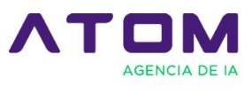
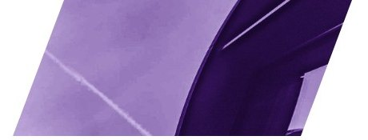
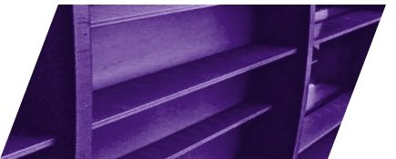
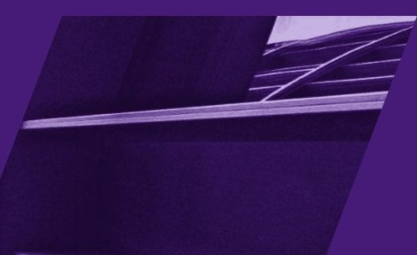

<title>Método de Diagnóstico ATOM</title>
<meta name="claude:viewport-fit-sides" content="cover">
<link rel="preconnect" href="https://fonts.googleapis.com">
<link rel="preconnect" href="https://fonts.gstatic.com" crossorigin>
<link rel="stylesheet" href="https://fonts.googleapis.com/css2?family=IBM+Plex+Mono:wght@400;500&family=Roboto:wght@300;400;500;700&display=swap">
<style>
/* Mesmo sistema do deck "Atom 2026 · Agência de IA": página branca, título Light com a segunda frase em Bold,
   lascas de foto roxa nos cantos, fio e ponto verdes, etiqueta mono espaçada, número de página mono. Um tema só, de propósito. */
:root {
  color-scheme: light;
  --roxo: #461b77;
  --verde: #00c864;
  --verde-escuro: #078a48;
  --tinta: #1e1e1e;
  --cinza: #585858;
  --fio: #e4e4e4;
  --lavanda: #f3f1f8;
  --branco: #ffffff;
  --ruim: #b3261e;
  --medio: #a35f00;
  --bom: #2e7d32;
  --sans: Roboto, "Helvetica Neue", Arial, sans-serif;
  --mono: "IBM Plex Mono", "Courier New", monospace;
}
* { box-sizing: border-box; }
body { background: var(--branco); color: var(--tinta); font-family: var(--sans); font-size: 15px; line-height: 1.6; }
p { margin: 0; }
h1, h2, h3 { margin: 0; font-weight: 300; letter-spacing: -.01em; text-wrap: balance; }
h1 b, h2 b { font-weight: 700; }
h1 { font-size: clamp(2.2rem, 4.2vw, 3.5rem); line-height: 1.12; }
h2 { font-size: clamp(1.9rem, 3.4vw, 2.8rem); line-height: 1.14; }
a { color: inherit; }
:focus-visible { outline: 2px solid var(--verde); outline-offset: 3px; }

.mono { font-family: var(--mono); font-size: .72rem; letter-spacing: .3em; text-transform: uppercase; color: var(--roxo); }
.fecho { font-weight: 700; color: var(--roxo); }
.cinza { color: var(--cinza); }

/* Barra */
.barra { position: sticky; top: env(safe-area-inset-top, 0px); z-index: 10; background: var(--branco); border-bottom: 1px solid var(--fio); }
.barra .in { max-width: 1440px; margin: 0 auto; padding: 10px max(16px, env(safe-area-inset-right, 0px)) 10px max(16px, env(safe-area-inset-left, 0px)); display: flex; justify-content: space-between; align-items: center; gap: 12px; flex-wrap: wrap; }
.barra img { height: 30px; width: auto; display: block; }
.migalha { font-family: var(--mono); font-size: .7rem; letter-spacing: .2em; text-transform: uppercase; color: var(--cinza); display: flex; gap: 10px; flex-wrap: wrap; align-items: center; }
.migalha a { color: var(--roxo); text-decoration: none; font-weight: 500; }

/* Página: cada seção se comporta como uma página do deck */
.pag { position: relative; overflow: hidden; border-bottom: 1px solid var(--fio); }
.pag .in { position: relative; z-index: 1; max-width: 1440px; margin: 0 auto; padding-block: clamp(48px, 6vw, 80px) clamp(56px, 6vw, 88px); padding-left: max(16px, min(5vw, 72px), env(safe-area-inset-left, 0px)); padding-right: max(16px, min(5vw, 72px), env(safe-area-inset-right, 0px)); }
.num { position: absolute; right: max(16px, min(5vw, 72px)); bottom: 22px; font-family: var(--mono); font-size: .72rem; letter-spacing: .35em; color: var(--roxo); z-index: 2; }
.lasca { position: absolute; top: 0; right: max(16px, 4vw); width: clamp(150px, 20vw, 290px); height: auto; z-index: 0; pointer-events: none; }
.lasca-base { position: absolute; bottom: 0; left: 0; width: clamp(140px, 18vw, 260px); height: auto; z-index: 0; pointer-events: none; }
.pag.roxa { background: var(--roxo); color: var(--branco); border-bottom: 0; }
.pag.roxa .mono, .pag.roxa .num { color: var(--verde); }
.pag.roxa .fecho { color: var(--branco); }
.pag.lav { background: var(--lavanda); }
.titulo { display: grid; gap: 10px; max-width: 760px; margin-bottom: clamp(32px, 4vw, 52px); padding-right: clamp(0px, 16vw, 260px); }
.titulo p { color: var(--cinza); max-width: 62ch; }
.pag.roxa .titulo p { color: #dcd3ea; }

/* Capa */
.capa .in { display: grid; grid-template-columns: minmax(0, 1fr) minmax(0, 1.05fr); align-items: center; gap: 24px; padding-block: 0; min-height: min(640px, 82vh); }
.capa .txt { display: grid; gap: 22px; padding-block: 56px; }
.capa .sub { font-weight: 700; font-size: .95rem; line-height: 1.7; }
.capa .logo { width: 150px; height: auto; display: block; margin-top: 18px; }
.capa .arte { align-self: stretch; display: flex; justify-content: flex-end; }
.capa .arte img { height: 100%; max-height: 640px; width: auto; max-width: 100%; object-fit: contain; object-position: right top; display: block; }
@media (max-width: 760px) {
  .capa .in { grid-template-columns: 1fr; min-height: 0; }
  .capa .arte img { max-height: 300px; }
}

/* Duas colunas como nas páginas 4 e 9 */
.duas { display: grid; grid-template-columns: minmax(0, .8fr) minmax(0, 1.2fr); gap: clamp(28px, 5vw, 80px); align-items: start; }
.duas.meio { grid-template-columns: minmax(0, 1fr) minmax(0, 1fr); }
@media (max-width: 900px) { .duas, .duas.meio { grid-template-columns: 1fr; } }
.lado { display: grid; gap: 18px; align-content: start; }
.lado h2 { font-size: clamp(1.9rem, 3.2vw, 2.6rem); }
.lado p { color: var(--cinza); }

/* Lista de pontos verdes (páginas 4, 9 e 14) */
.pontos { list-style: none; margin: 0; padding: 0; display: grid; grid-template-columns: repeat(2, minmax(0, 1fr)); gap: 0 36px; }
.pontos.uma { grid-template-columns: 1fr; }
@media (max-width: 640px) { .pontos { grid-template-columns: 1fr; } }
.pontos li { border-top: 1px solid var(--fio); padding: 14px 0 16px; }
.pontos b { display: flex; gap: 10px; align-items: baseline; font-weight: 700; font-size: .95rem; }
.pontos b::before { content: ""; width: 7px; height: 7px; border-radius: 50%; background: var(--verde); flex: none; transform: translateY(-2px); }
.pontos b .n { font-family: var(--mono); font-weight: 500; font-size: .7rem; letter-spacing: .15em; color: var(--roxo); }
.pontos p { margin-top: 4px; padding-left: 17px; font-size: .9rem; color: var(--cinza); line-height: 1.55; }
.pag.roxa .pontos li { border-top-color: rgba(255, 255, 255, .18); }
.pag.roxa .pontos p { color: #dcd3ea; }

/* Fio verde com ponto (páginas 8 e 19) */
.passos { display: grid; grid-template-columns: repeat(var(--cols, 5), minmax(0, 1fr)); gap: 22px; }
@media (max-width: 960px) { .passos { grid-template-columns: repeat(2, minmax(0, 1fr)); } }
@media (max-width: 540px) { .passos { grid-template-columns: 1fr; } }
.passo { display: grid; gap: 8px; align-content: start; }
.passo .fio { display: flex; align-items: center; margin-bottom: 10px; }
.passo .fio::before { content: ""; width: 10px; height: 10px; border-radius: 50%; background: var(--verde); flex: none; }
.passo .fio::after { content: ""; flex: 1; height: 2px; background: var(--verde); }
.passo h3 { font-size: 1.1rem; font-weight: 700; }
.passo p { font-size: .9rem; color: var(--cinza); }
.passo .mono { font-size: .64rem; letter-spacing: .25em; margin-top: 18px; }
.pag.roxa .passo p { color: #dcd3ea; }
.passo ul { list-style: none; margin: 4px 0 0; padding: 0; display: grid; gap: 6px; font-size: .9rem; }
.passo li { display: grid; grid-template-columns: 18px 1fr; }
.passo li::before { content: "→"; color: var(--verde); }

/* Cartões no formato "Cases de sucesso" (página 17) */
.casos { display: grid; grid-template-columns: repeat(auto-fill, minmax(min(100%, 250px), 1fr)); gap: 18px; }
.caso { display: flex; flex-direction: column; background: var(--branco); color: var(--tinta); text-decoration: none; box-shadow: 0 1px 2px rgba(30, 30, 30, .06), 0 6px 18px rgba(30, 30, 30, .07); min-width: 0; }
.caso:hover .caso-cab { background: #3a1564; }
.caso-cab { background: var(--roxo); color: var(--branco); padding: 14px 18px 16px; display: grid; gap: 4px; min-height: 76px; align-content: start; transition: background .15s; }
.caso-cab .cat { font-family: var(--mono); font-size: .6rem; letter-spacing: .2em; text-transform: uppercase; color: var(--verde); }
.caso-cab b { font-weight: 700; font-size: 1rem; line-height: 1.3; }
.caso img { width: 100%; height: auto; aspect-ratio: 16 / 9; object-fit: cover; display: block; border-bottom: 1px solid var(--fio); }
.caso-corpo { padding: 18px; display: flex; flex-direction: column; gap: 8px; flex: 1; }
.caso .big { font-size: 2.8rem; font-weight: 500; line-height: 1; color: var(--roxo); letter-spacing: -.02em; font-variant-numeric: tabular-nums; }
.caso .leg { font-size: .85rem; color: var(--tinta); padding-bottom: 10px; border-bottom: 1px solid var(--fio); }
.setas { list-style: none; margin: 0; padding: 0; display: grid; gap: 7px; font-size: .82rem; color: var(--cinza); line-height: 1.45; }
.setas li { display: grid; grid-template-columns: 16px 1fr; }
.setas li::before { content: "→"; color: var(--verde-escuro); }
.caso-pe { margin-top: auto; padding-top: 14px; font-family: var(--mono); font-size: .62rem; letter-spacing: .2em; text-transform: uppercase; color: var(--cinza); display: flex; justify-content: space-between; gap: 8px; }
.caso-pe span:last-child { color: var(--roxo); font-weight: 500; }

/* Tabela no formato da página 6 */
.tabela { width: 100%; border-collapse: collapse; }
.tabela th { text-align: left; font-family: var(--mono); font-weight: 400; font-size: .64rem; letter-spacing: .3em; text-transform: uppercase; color: var(--roxo); padding: 0 0 10px; }
.tabela td { border-top: 1px solid var(--fio); padding: 14px 16px 14px 0; vertical-align: baseline; font-size: .92rem; }
.tabela td.rot { font-family: var(--mono); font-size: .66rem; letter-spacing: .3em; text-transform: uppercase; color: var(--roxo); white-space: nowrap; width: 1%; padding-right: 28px; }
.tabela a { text-decoration: none; font-weight: 700; }
.tabela a:hover { color: var(--roxo); }
.tabela .ir { text-align: right; color: var(--roxo); font-family: var(--mono); font-size: .7rem; letter-spacing: .15em; white-space: nowrap; }
.rolar { overflow-x: auto; }

/* Botões */
.acoes { display: flex; flex-wrap: wrap; gap: 10px; }
.botao { display: inline-flex; align-items: center; gap: 8px; background: var(--roxo); color: var(--branco); text-decoration: none; font-weight: 700; font-size: .88rem; padding: 11px 18px; }
.botao:hover { background: #3a1564; }
.botao.linha { background: transparent; color: var(--roxo); box-shadow: inset 0 0 0 1px var(--roxo); }
.selo { display: inline-block; background: var(--roxo); color: var(--branco); font-weight: 700; font-size: .7rem; padding: 3px 8px; letter-spacing: .02em; white-space: nowrap; }
.selo.verde { background: var(--verde); color: var(--tinta); }
.selo.cinza { background: var(--fio); color: var(--tinta); }

/* Números grandes com fio verde (página 5) */
.stats { display: grid; grid-template-columns: repeat(3, minmax(0, 1fr)); gap: clamp(20px, 3vw, 40px); }
@media (max-width: 760px) { .stats { grid-template-columns: 1fr; } }
.stat { border-top: 2px solid var(--verde); padding-top: 22px; display: grid; gap: 10px; align-content: start; }
.stat .v { font-size: clamp(3rem, 6vw, 4.6rem); font-weight: 500; line-height: 1; letter-spacing: -.02em; color: var(--roxo); font-variant-numeric: tabular-nums; }
.stat p { font-size: .92rem; }
.stat .fx { font-family: var(--mono); font-size: .64rem; letter-spacing: .2em; text-transform: uppercase; }

/* Páginas do modelo */
.miniaturas { display: grid; grid-template-columns: repeat(auto-fill, minmax(min(100%, 180px), 1fr)); gap: 12px; }
.miniaturas figure { margin: 0; display: grid; gap: 6px; }
.miniaturas img { width: 100%; height: auto; aspect-ratio: 16 / 9; object-fit: cover; display: block; box-shadow: 0 1px 2px rgba(30, 30, 30, .08), 0 4px 12px rgba(30, 30, 30, .06); }
.miniaturas figcaption { font-family: var(--mono); font-size: .6rem; letter-spacing: .2em; text-transform: uppercase; color: var(--cinza); }
.capa-modelo { width: 100%; height: auto; display: block; box-shadow: 0 1px 2px rgba(30, 30, 30, .08), 0 8px 24px rgba(30, 30, 30, .08); }

/* Simulador */
.sim { display: grid; grid-template-columns: minmax(0, 1.45fr) minmax(0, 1fr); gap: clamp(24px, 3vw, 44px); align-items: start; }
@media (max-width: 980px) { .sim { grid-template-columns: 1fr; } }
.grupo { font-family: var(--mono); font-size: .64rem; letter-spacing: .3em; text-transform: uppercase; color: var(--roxo); margin: 34px 0 12px; }
.grupo:first-child { margin-top: 0; }
.areas { display: grid; grid-template-columns: repeat(auto-fill, minmax(min(100%, 250px), 1fr)); gap: 22px 22px; }
.area { border-top: 2px solid var(--verde); padding-top: 12px; display: grid; gap: 8px; align-content: start; min-width: 0; }
.area.fora { border-top-color: var(--fio); }
.area-top { display: flex; justify-content: space-between; align-items: baseline; gap: 10px; }
.area h3 { font-size: 1rem; font-weight: 700; }
.area .nota { font-size: 1.5rem; font-weight: 500; color: var(--roxo); font-variant-numeric: tabular-nums; white-space: nowrap; }
.area.fora .nota { color: var(--cinza); }
.area .nota small { font-size: .75rem; font-weight: 400; color: var(--cinza); }
.crit { list-style: none; margin: 0; padding: 0; display: grid; gap: 3px; }
.crit label { display: grid; grid-template-columns: 18px 1fr; gap: 8px; align-items: start; font-size: .84rem; color: var(--cinza); cursor: pointer; line-height: 1.45; padding: 2px 0; }
.crit label:hover { color: var(--tinta); }
input.qd { appearance: none; -webkit-appearance: none; width: 13px; height: 13px; margin: 3px 0 0; border: 1.5px solid var(--roxo); background: var(--branco); cursor: pointer; }
input.qd:checked { background: var(--roxo); box-shadow: inset 0 0 0 2px var(--branco); }
.area-pe { display: flex; justify-content: space-between; align-items: center; gap: 8px; flex-wrap: wrap; font-family: var(--mono); font-size: .6rem; letter-spacing: .15em; text-transform: uppercase; color: var(--cinza); padding-top: 6px; }
.area-pe label { display: inline-flex; gap: 6px; align-items: center; cursor: pointer; color: var(--roxo); }
.area-pe input.qd { margin: 0; }
.estado { font-family: var(--mono); font-size: .6rem; letter-spacing: .15em; text-transform: uppercase; }
.estado.ok { color: var(--verde-escuro); } .estado.disc { color: var(--medio); } .estado.adef { color: var(--cinza); }

.boletim { position: sticky; top: calc(env(safe-area-inset-top, 0px) + 70px); background: var(--roxo); color: var(--branco); padding: 26px 26px 24px; display: grid; gap: 18px; }
.boletim .mono { color: var(--verde); }
.boletim .geral { display: flex; align-items: baseline; gap: 14px; flex-wrap: wrap; }
.boletim .geral .v { font-size: 3.4rem; font-weight: 300; line-height: 1; font-variant-numeric: tabular-nums; }
.boletim .geral .v small { font-size: 1rem; color: #cfc4e2; }
.boletim .geral .f { font-weight: 700; }
.boletim .qtd { font-size: .8rem; color: #cfc4e2; }
.linhas { display: grid; }
.linha { display: grid; grid-template-columns: minmax(0, 1fr) 84px 40px; gap: 10px; align-items: center; padding: 7px 0; border-top: 1px solid rgba(255, 255, 255, .16); font-size: .84rem; }
.linha .tr { height: 8px; background: rgba(255, 255, 255, .14); }
.linha .tr i { display: block; height: 100%; }
.linha .v { text-align: right; font-variant-numeric: tabular-nums; font-weight: 500; }
.urg { background: var(--branco); color: var(--tinta); padding: 16px 18px; display: grid; gap: 8px; }
.urg .mono { color: var(--roxo); }
.urg ol { margin: 0; padding: 0; list-style: none; display: grid; gap: 6px; counter-reset: u; font-size: .88rem; }
.urg li { counter-increment: u; display: grid; grid-template-columns: 20px 1fr auto; gap: 6px; }
.urg li::before { content: counter(u) "."; font-weight: 700; color: var(--roxo); }
.urg li span:last-child { font-weight: 700; font-variant-numeric: tabular-nums; }
.legenda { display: flex; flex-wrap: wrap; gap: 6px 18px; font-size: .74rem; color: #cfc4e2; }
.legenda span { display: inline-flex; align-items: center; gap: 6px; }
.legenda i { width: 10px; height: 10px; display: inline-block; }

/* Quanto vale */
.valor { display: grid; grid-template-columns: minmax(0, 1fr) minmax(0, 400px); gap: clamp(24px, 3vw, 48px); align-items: stretch; }
@media (max-width: 880px) { .valor { grid-template-columns: 1fr; } }
.conta { border-top: 2px solid var(--roxo); border-bottom: 2px solid var(--roxo); }
.conta .ln { display: grid; grid-template-columns: 28px minmax(0, 1fr) minmax(90px, 160px); gap: 12px; align-items: center; padding: 13px 0; border-bottom: 1px solid var(--fio); font-size: 1rem; }
.conta .ln:last-child { border-bottom: 0; }
.conta .op { font-weight: 700; color: var(--roxo); font-size: 1.15rem; }
.conta .res { color: var(--cinza); }
.conta .res .op { color: var(--cinza); font-weight: 400; }
.conta input { font: 300 1.6rem var(--sans); color: var(--tinta); background: transparent; border: 0; border-bottom: 1px solid var(--fio); padding: 0 0 2px; width: 100%; text-align: right; font-variant-numeric: tabular-nums; }
.conta input:focus { outline: none; border-bottom-color: var(--verde); }
.conta .calc { font-size: 1.6rem; font-weight: 300; text-align: right; font-variant-numeric: tabular-nums; }
.caixa { background: var(--roxo); color: var(--branco); padding: clamp(28px, 3vw, 44px); display: grid; gap: 14px; align-content: center; }
.caixa .mono { color: var(--branco); }
.caixa .v { font-size: clamp(2.6rem, 5vw, 3.8rem); font-weight: 300; line-height: 1; font-variant-numeric: tabular-nums; }
.caixa p { color: #e4dcef; font-size: .92rem; }
.nota-fonte { margin-top: 18px; font-size: .8rem; color: var(--cinza); }

/* Rodapé */
.rodape .in { display: flex; flex-wrap: wrap; justify-content: space-between; align-items: center; gap: 16px; padding-block: 30px 40px; }
.rodape img { height: 34px; width: auto; display: block; }
.url { font-family: var(--mono); font-size: .8rem; letter-spacing: .3em; padding: 6px 10px; box-shadow: inset 0 0 0 1px var(--fio); }
.contato { display: flex; flex-wrap: wrap; gap: 14px 36px; }
.contato div { display: grid; gap: 2px; }
.contato .mono { font-size: .6rem; }
.contato b { font-size: .9rem; }

@media (prefers-reduced-motion: reduce) { * { transition: none !important; } }
</style>

<header class="barra">
  <div class="in">
    <a href="#inicio" aria-label="Início"></a>
    <nav class="migalha" id="migalha" aria-label="Você está em"></nav>
  </div>
</header>

<!-- ================= TELA INICIAL ================= -->
<main id="v-inicio">
  <section class="pag capa">
    <div class="in">
      <div class="txt">
        <h1>Diagnósticos e propostas <b>com método.</b></h1>
        <p class="sub">Cada modelo da Atom em um só lugar.<br>O que realmente muda o jogo em cada canal.</p>
        
      </div>
      <div class="arte"></div>
    </div>
  </section>

  <section class="pag">
    
    <div class="in">
      <div class="duas">
        <div class="lado">
          <span class="mono">Diagnóstico</span>
          <h2>Como olhamos <b>a empresa</b></h2>
          <p>O método define o que medir e como dar nota. O Modelo Unificado é a apresentação que o cliente recebe.</p>
          <ul class="pontos uma">
            <li><b>Nenhuma nota sem dado</b><p>Toda página cita a fonte e a data da coleta.</p></li>
            <li><b>Cinco critérios por área</b><p>Cada critério vale 2 pontos. A nota vai de 0 a 10.</p></li>
            <li><b>Três urgências e um plano</b><p>As piores notas viram o plano de 90 dias e a proposta.</p></li>
          </ul>
        </div>
        <div class="casos" id="q-diag"></div>
      </div>
      <p class="fecho" style="margin-top:44px">O diagnóstico é a porta de entrada. A proposta nasce dele.</p>
    </div>
    <span class="num">0 2</span>
  </section>

  <section class="pag">
    
    <div class="in">
      <div class="titulo"><span class="mono">Proposta</span><h2>Como apresentamos <b>o trabalho</b></h2><p>Os dois modelos oficiais de proposta. Abertura padrão da Atom, capa com o logo do cliente e o preço no fim.</p></div>
      <div class="casos" id="q-prop" style="grid-template-columns:repeat(auto-fill,minmax(min(100%,340px),1fr));max-width:1100px"></div>
      <p class="fecho" style="margin-top:44px">Cada projeto nasce do zero, para a marca que vai usá-lo.</p>
    </div>
    <span class="num">0 3</span>
  </section>

  <section class="pag roxa">
    
    <div class="in">
      <div class="titulo"><span class="mono">Apresentações por serviço</span><h2>Seis decks, <b>com e sem preço</b></h2><p>Cada um com os 12 pontos que decidem o resultado do canal.</p></div>
      <div class="casos" id="q-serv"></div>
    </div>
    <span class="num">0 4</span>
  </section>

  <section class="pag">
    
    <div class="in">
      <div class="titulo"><span class="mono">Feitos com estes modelos</span><h2>Últimos <b>trabalhos</b></h2></div>
      <div class="rolar"><table class="tabela"><thead><tr><th>Tipo</th><th>Cliente</th><th>Peça</th><th></th></tr></thead><tbody id="trabalhos"></tbody></table></div>
    </div>
    <span class="num">0 5</span>
  </section>
</main>

<!-- ================= FICHA DE MODELO ================= -->
<main id="v-modelo" hidden>
  <section class="pag">
    
    <div class="in">
      <div class="duas">
        <div class="lado">
          <span class="mono" id="m-tag"></span>
          <h2 id="m-titulo"></h2>
          <p id="m-resumo"></p>
          <div class="acoes" id="m-acoes"></div>
        </div>
        <div>
          <span class="mono" style="display:block;margin-bottom:14px">Os 12 pontos que mudam o jogo</span>
          <ol class="pontos" id="m-doze"></ol>
        </div>
      </div>
      <p class="fecho" style="margin-top:40px">Em ordem de peso. Os três primeiros são os que mais custam venda quando faltam.</p>
    </div>
    <span class="num">0 1</span>
  </section>

  <section class="pag">
    
    <div class="in">
      <div class="titulo"><span class="mono">O modelo</span><h2 id="m-titulo2"></h2></div>
      <div class="duas" style="grid-template-columns:minmax(0,1.5fr) minmax(0,1fr)">
        <div id="m-esq"></div>
        <div class="lado">
          <table class="tabela"><tbody id="m-fatos"></tbody></table>
          <div id="m-pend-bloco"><span class="mono" style="display:block;margin:18px 0 6px">O que falta decidir</span><ul class="pontos uma" id="m-pend"></ul></div>
        </div>
      </div>
    </div>
    <span class="num">0 2</span>
  </section>
</main>

<!-- ================= MÉTODO ================= -->
<main id="v-metodo" hidden>
  <section class="pag">
    
    <div class="in">
      <div class="titulo"><span class="mono">Método em construção · v0.5</span><h1>Diagnóstico de <b>marketing e vendas</b></h1><p>Como a Atom olha uma empresa de fora para dentro, mede onde ela perde clientes e transforma isso em um plano. A régua é a mesma do Modelo Unificado; o método estende essa régua para vendas e gestão.</p></div>
      <div class="passos">
        <div class="passo"><div class="fio"></div><h3>Pré-diagnóstico</h3><p>Coleta de dados públicos: Google, mapa, avaliações, site, Instagram e respostas das IAs.</p><span class="mono">Antes da reunião</span></div>
        <div class="passo"><div class="fio"></div><h3>Entrevista</h3><p>Conversa com o dono ou o gestor para medir o que não é público: processo, números e time.</p><span class="mono">Reunião</span></div>
        <div class="passo"><div class="fio"></div><h3>Boletim</h3><p>Cada área recebe nota de 0 a 10 pelos cinco critérios. As três piores viram urgências.</p><span class="mono">Régua Atom</span></div>
        <div class="passo"><div class="fio"></div><h3>Quanto vale</h3><p>Procura × contato × fechamento × ticket, arredondado a cada etapa.</p><span class="mono">Cálculo</span></div>
        <div class="passo"><div class="fio"></div><h3>Plano</h3><p>Hoje e grátis, 90 dias para ser encontrado, 6 meses para ser escolhido.</p><span class="mono">Proposta</span></div>
      </div>
      <p class="fecho" style="margin-top:56px">Nenhuma nota sem dado. Toda página cita a fonte e a data da coleta.</p>
    </div>
    <span class="num">0 1</span>
  </section>

  <section class="pag">
    
    <div class="in">
      <div class="duas">
        <div class="lado"><span class="mono">Pontos de convergência</span><h2>Os 12 pontos que <b>mudam o jogo</b></h2><p>O que realmente decide o sucesso em marketing e vendas, em ordem de peso.</p></div>
        <ol class="pontos" id="doze-metodo"></ol>
      </div>
    </div>
    <span class="num">0 2</span>
  </section>

  <section class="pag">
    
    <div class="in">
      <div class="titulo"><span class="mono">Régua Atom</span><h2>Cinco critérios por área, <b>dois pontos cada</b></h2></div>
      <div class="stats">
        <div class="stat"><span class="v">0–4</span><p><b>Perdendo cliente.</b> Até dois critérios atendidos. A empresa perde venda para o concorrente nesta área.</p><span class="fx" style="color:var(--ruim)">Vermelho no boletim</span></div>
        <div class="stat"><span class="v">5–7</span><p><b>Pode melhorar.</b> Três critérios atendidos. Funciona, mas abaixo de quem disputa o mesmo cliente.</p><span class="fx" style="color:var(--medio)">Amarelo no boletim</span></div>
        <div class="stat"><span class="v">8–10</span><p><b>Funciona.</b> Quatro ou cinco critérios atendidos. Está no nível dos líderes da cidade.</p><span class="fx" style="color:var(--bom)">Verde no boletim</span></div>
      </div>
      <p class="fecho" style="margin-top:48px">Nota geral é a média das áreas medidas. Área não medida fica fora da média.</p>
    </div>
    <span class="num">0 3</span>
  </section>

  <section class="pag">
    <div class="in">
      <div class="titulo"><span class="mono">Áreas e simulador</span><h2>O boletim <b>em ação</b></h2><p>Marque os critérios para ver o boletim mudar. O exemplo usa os mesmos dados fictícios do boletim do Modelo Unificado. As áreas de vendas e gestão são propostas: marque "na nota" para testá-las.</p></div>
      <div class="sim">
        <div id="areas"></div>
        <aside class="boletim" aria-label="Boletim">
          <span class="mono">O boletim</span>
          <div class="geral"><span class="v" id="geral">0</span><span class="f" id="geral-f"></span></div>
          <span class="qtd" id="geral-qtd"></span>
          <div class="linhas" id="barras"></div>
          <div class="legenda"><span><i style="background:#e5675f"></i>0–4</span><span><i style="background:#f0b44c"></i>5–7</span><span><i style="background:var(--verde)"></i>8–10</span></div>
          <div class="urg"><span class="mono">As três urgências</span><ol id="urgencias"></ol></div>
        </aside>
      </div>
    </div>
    <span class="num">0 4</span>
  </section>

  <section class="pag">
    
    <div class="in">
      <div class="titulo"><span class="mono">Quanto isso vale</span><h2>Essa procura vale <b id="titulo-valor">R$ 0</b> por mês</h2><p>Cada etapa é arredondada e o número arredondado segue para a próxima, para o valor do quadro bater com a conta.</p></div>
      <div class="valor">
        <div class="conta">
          <div class="ln"><span class="op"></span><label for="procura">Buscas por mês na cidade</label><input id="procura" type="number" min="0" step="10" value="3090"></div>
          <div class="ln"><span class="op">×</span><label for="contato">% que entra em contato</label><input id="contato" type="number" min="0" max="100" step="0.5" value="3"></div>
          <div class="ln res"><span class="op">=</span><span>novos contatos por mês</span><span class="calc" id="r-contatos">0</span></div>
          <div class="ln"><span class="op">×</span><label for="fecha">% que fecha</label><input id="fecha" type="number" min="0" max="100" step="1" value="25"></div>
          <div class="ln res"><span class="op">=</span><span>novos clientes por mês</span><span class="calc" id="r-clientes">0</span></div>
          <div class="ln"><span class="op">×</span><label for="ticket">Ticket médio (R$)</label><input id="ticket" type="number" min="0" step="50" value="3000"></div>
        </div>
        <div class="caixa">
          <span class="mono">Por mês</span>
          <span class="v" id="r-valor">R$ 0</span>
          <p>em clientes que já estão procurando. Hoje, a maior parte vai para quem aparece primeiro.</p>
          <p style="font-size:.82rem;color:#cfc4e2">É o tamanho da procura, não uma promessa de faturamento.</p>
        </div>
      </div>
      <p class="nota-fonte">Procura: Semrush, buscas que citam a cidade · contato e fechamento: premissas conservadoras, ajustadas na reunião · ticket: informado pela empresa.</p>
    </div>
    <span class="num">0 5</span>
  </section>

  <section class="pag roxa">
    
    <div class="in">
      <div class="titulo"><span class="mono">O plano</span><h2>Três passos. <b>O primeiro custa zero.</b></h2><p>As ações saem dos critérios reprovados no boletim.</p></div>
      <div class="passos" style="--cols:3">
        <div class="passo"><div class="fio"></div><h3>Hoje · grátis</h3><p>Arrumar a casa.</p><ul><li><span>Corrigir telefone e horário no Google;</span></li><li><span>Responder as avaliações em aberto;</span></li><li><span>Pôr o WhatsApp na bio do Instagram.</span></li></ul></div>
        <div class="passo"><div class="fio"></div><h3>Em 90 dias</h3><p>Ser encontrado.</p><ul><li><span>Disputar o mapa e a lista na busca principal;</span></li><li><span>Uma página para cada serviço e unidade;</span></li><li><span>Rotina para pedir avaliação a cada cliente.</span></li></ul></div>
        <div class="passo"><div class="fio"></div><h3>Em 6 meses</h3><p>Ser escolhido.</p><ul><li><span>Aparecer nas respostas das IAs;</span></li><li><span>Responder no WhatsApp em minutos, com IA;</span></li><li><span>Relatório mensal com estes mesmos números.</span></li></ul></div>
      </div>
      <p class="fecho" style="margin-top:52px">Prazos são objetivos de cada fase, não promessa de posição.</p>
    </div>
    <span class="num">0 6</span>
  </section>

  <section class="pag">
    
    <div class="in">
      <div class="duas meio">
        <div class="lado">
          <span class="mono">Decisões em aberto</span>
          <h2>O que <b>precisamos decidir</b></h2>
          <ul class="pontos uma">
            <li><b>Vendas e gestão entram no boletim?</b><p>Dependem da entrevista. Proposta: entram só no diagnóstico com reunião.</p></li>
            <li><b>As áreas têm o mesmo peso?</b><p>Proposta: peso igual na versão 1, revisão depois dos primeiros 20 diagnósticos.</p></li>
            <li><b>Mídia paga entra na prospecção?</b><p>Dá para ver anúncios ativos de fora, mas não o resultado deles.</p></li>
            <li><b>Roteiro da entrevista</b><p>Duração, quem participa e as perguntas de cada critério de vendas e gestão.</p></li>
            <li><b>Premissas por segmento</b><p>% de contato e % de fechamento para clínicas médicas, odontológicas e lojas de pneus.</p></li>
            <li><b>Cliente oculto no WhatsApp</b><p>Quem faz o teste e onde registra o tempo de resposta.</p></li>
          </ul>
        </div>
        <div class="lado">
          <span class="mono">Histórico</span>
          <h2>Alterações <b>no método</b></h2>
          <table class="tabela"><tbody>
            <tr><td class="rot">v0.5</td><td>Visual idêntico ao deck Atom 2026 · Agência de IA: capa, logo e lascas tirados do próprio PDF, cartões no formato "Cases de sucesso", listas de ponto verde e páginas numeradas.</td></tr>
            <tr><td class="rot">v0.4</td><td>Os 12 pontos que mudam o jogo em cada modelo e ficha para os seis decks de serviço.</td></tr>
            <tr><td class="rot">v0.3</td><td>Régua do Modelo Unificado: 5 critérios de 2 pontos por área. Central com os modelos reais.</td></tr>
            <tr><td class="rot">v0.2</td><td>Tela inicial com os quadros dos modelos.</td></tr>
            <tr><td class="rot">v0.1</td><td>Primeira versão: etapas, dimensões, régua, simulador e cálculo.</td></tr>
          </tbody></table>
        </div>
      </div>
    </div>
    <span class="num">0 7</span>
  </section>
</main>

<footer class="pag rodape">
  <div class="in">
    
    <div class="contato">
      <div><span class="mono">Fale com</span><b>Thiago Mota</b></div>
      <div><span class="mono">E-mail</span><b>thiago@atomdigital.com.br</b></div>
      <div><span class="mono">WhatsApp</span><b>(62) 98433-8982</b></div>
    </div>
    <span class="url">atomdigital.com.br</span>
  </div>
</footer>

<script>
const esc = s => String(s).replace(/[&<>"]/g, c => ({ "&": "&amp;", "<": "&lt;", ">": "&gt;", '"': "&quot;" }[c]));
const BIBLIOTECA = "https://claude.ai/artifact/XXJxzV21z3gymxyD7Z19pe";

/* ---------- Método: áreas ---------- */
const PILARES = [
  { id: "mkt", nome: "<b>Marketing</b>", sub: "ser encontrado e escolhido" },
  { id: "ven", nome: "<b>Vendas</b>", sub: "transformar o contato em cliente" },
  { id: "ges", nome: "<b>Gestão</b>", sub: "saber o que funciona" }
];
const AREAS = [
  { id: "rep", p: "mkt", nome: "Reputação da marca", st: "ok", fonte: "Semrush · Google", ex: 4,
    c: ["1º na busca pelo nome", "Site é o 1º resultado, não um agregador", "Perfil do Google aparece na busca pelo nome", "Nota no Google 4,5 ou mais", "Nenhuma reclamação grave sem resposta"] },
  { id: "bus", p: "mkt", nome: "Busca no Google", st: "ok", fonte: "Semrush", ex: 1,
    c: ["1ª página na busca principal", "Alguma busca de serviço no top 20", "Página própria para cada serviço", "Visitas crescendo em 12 meses", "Maioria das visitas de quem não buscou pelo nome"] },
  { id: "map", p: "mkt", nome: "Google Maps", st: "ok", fonte: "Apify Maps", ex: 2,
    c: ["Top 3 na busca principal", "Perfil verificado", "Telefone e horário certos", "50 fotos ou mais", "Categoria principal certa"] },
  { id: "ava", p: "mkt", nome: "Avaliações", st: "ok", fonte: "Apify Maps", ex: 2,
    c: ["Nota 4,5 ou mais", "Volume de pelo menos metade do líder", "Avaliação nova no último mês", "Responde 80% ou mais", "Nenhuma 1 estrela nos últimos 3 meses"] },
  { id: "sit", p: "mkt", nome: "Site", st: "ok", fonte: "PageSpeed · rastreio", ex: 3,
    c: ["Abre em até 3 s no celular", "Diz o que faz e onde na primeira tela", "WhatsApp sempre visível", "Telefone certo e clicável", "Saúde técnica 80/100 ou mais"] },
  { id: "ins", p: "mkt", nome: "Instagram", st: "ok", fonte: "Apify Instagram", ex: 1,
    c: ["Post nos últimos 7 dias", "8 posts ou mais no mês", "Reels no mês", "WhatsApp na bio", "Link na bio"] },
  { id: "ia", p: "mkt", nome: "Busca com IA", st: "ok", fonte: "APIs OpenAI e Gemini · HTML", ex: 1,
    c: ["Citado no ChatGPT", "Citado no Gemini", "Citado no Google Modo IA", "Site identifica empresa e unidades", "Mesmo nome, endereço e telefone em todo lugar"] },
  { id: "mid", p: "mkt", nome: "Mídia paga", st: "disc", fonte: "Biblioteca de Anúncios · HTML", ex: 1, fora: true,
    c: ["Anúncio ativo no Google", "Anúncio ativo na Meta", "Página de destino própria", "Tag de conversão instalada", "Anúncio fala do serviço e da cidade"] },
  { id: "wha", p: "ven", nome: "WhatsApp", st: "ok", fonte: "Cliente oculto", ex: 1,
    c: ["Respondeu em até 5 min", "Respondeu à pergunta feita", "Respondeu fora do horário", "Pediu o nome ou ofereceu agendar", "Mandou endereço ou link útil"] },
  { id: "crm", p: "ven", nome: "Processo e CRM", st: "adef", fonte: "Entrevista", ex: 1, fora: true,
    c: ["Todo contato registrado em CRM", "Etapas do funil definidas", "Follow-up em até 24 h", "Um responsável por lead", "Revisão semanal do funil"] },
  { id: "fec", p: "ven", nome: "Proposta e fechamento", st: "adef", fonte: "Entrevista · CRM", ex: 2, fora: true,
    c: ["Sabe a taxa de fechamento", "Proposta enviada em até 48 h", "Registra o motivo de perda", "Acompanha o tempo até fechar", "Tem apresentação padrão"] },
  { id: "pos", p: "ven", nome: "Pós-venda", st: "adef", fonte: "Entrevista", ex: 1, fora: true,
    c: ["Pede avaliação depois do atendimento", "Pede indicação", "Reativa clientes antigos", "Mede recompra", "Tem canal de contato pós-venda"] },
  { id: "num", p: "ges", nome: "Números do negócio", st: "adef", fonte: "Entrevista", ex: 1, fora: true,
    c: ["Sabe de onde vem cada cliente", "Conhece o ticket médio", "Conhece o custo por cliente", "Tem meta mensal de vendas", "Acompanha os números em painel"] }
];

const ESTADO_TXT = { ok: ["ok", "Definido"], disc: ["disc", "Em discussão"], adef: ["adef", "Proposta"] };
const ORDEM = { ven: 0, ges: 1, mkt: 2 };
const estado = Object.fromEntries(AREAS.map(a => [a.id, { marc: a.c.map((_, i) => i < a.ex), dentro: !a.fora }]));

document.getElementById("areas").innerHTML = PILARES.map(p => `
  <div class="grupo">${p.nome.replace(/<\/?b>/g, "")} · ${esc(p.sub)}</div>
  <div class="areas">${AREAS.filter(a => a.p === p.id).map(a => `
    <div class="area${a.fora ? " fora" : ""}" id="a-${a.id}">
      <div class="area-top"><h3>${esc(a.nome)}</h3><span class="nota" id="n-${a.id}"></span></div>
      <span class="estado ${ESTADO_TXT[a.st][0]}">${ESTADO_TXT[a.st][1]}</span>
      <ul class="crit">${a.c.map((c, i) => `<li><label><input class="qd" type="checkbox" id="c-${a.id}-${i}"${i < a.ex ? " checked" : ""}><span>${esc(c)}</span></label></li>`).join("")}</ul>
      <div class="area-pe"><span>${esc(a.fonte)}</span><label><input class="qd" type="checkbox" id="d-${a.id}"${a.fora ? "" : " checked"}>na nota</label></div>
    </div>`).join("")}</div>`).join("");

AREAS.forEach(a => {
  a.c.forEach((_, i) => document.getElementById(`c-${a.id}-${i}`).addEventListener("change", e => { estado[a.id].marc[i] = e.target.checked; boletim(); }));
  document.getElementById("d-" + a.id).addEventListener("change", e => { estado[a.id].dentro = e.target.checked; boletim(); });
});
const nota = id => estado[id].marc.filter(Boolean).length * 2;
const faixa = n => n <= 4 ? ["Perdendo cliente", "#e5675f"] : n <= 7 ? ["Pode melhorar", "#f0b44c"] : ["Funciona", "#00c864"];

function boletim() {
  AREAS.forEach(a => {
    document.getElementById("n-" + a.id).innerHTML = `${nota(a.id)}<small>/10</small>`;
    document.getElementById("a-" + a.id).classList.toggle("fora", !estado[a.id].dentro);
  });
  const med = AREAS.filter(a => estado[a.id].dentro);
  document.getElementById("barras").innerHTML = med.map(a => {
    const n = nota(a.id);
    return `<div class="linha"><span>${esc(a.nome)}</span><span class="tr"><i style="width:${n * 10}%;background:${faixa(n)[1]}"></i></span><span class="v">${n}/10</span></div>`;
  }).join("");
  const media = med.length ? Math.round(med.reduce((s, a) => s + nota(a.id), 0) / med.length * 10) / 10 : 0;
  document.getElementById("geral").innerHTML = `${media.toLocaleString("pt-BR", { minimumFractionDigits: 1 })}<small>/10</small>`;
  document.getElementById("geral-f").textContent = faixa(media)[0];
  document.getElementById("geral-qtd").textContent = `${med.length} de ${AREAS.length} áreas na nota`;
  const urg = med.slice().sort((x, y) => nota(x.id) - nota(y.id) || ORDEM[x.p] - ORDEM[y.p]).slice(0, 3);
  document.getElementById("urgencias").innerHTML = urg.map(a => `<li><span>${esc(a.nome)}</span><span>${nota(a.id)}/10</span></li>`).join("");
}
boletim();

/* ---------- Quanto vale ---------- */
const brl = v => v.toLocaleString("pt-BR", { style: "currency", currency: "BRL", maximumFractionDigits: 0 });
function valor() {
  const g = id => Math.max(0, parseFloat(document.getElementById(id).value) || 0);
  const contatos = Math.round(g("procura") * g("contato") / 100);
  const clientes = Math.round(contatos * g("fecha") / 100);
  const total = clientes * g("ticket");
  document.getElementById("r-contatos").textContent = contatos.toLocaleString("pt-BR");
  document.getElementById("r-clientes").textContent = clientes.toLocaleString("pt-BR");
  document.getElementById("r-valor").textContent = brl(total);
  document.getElementById("titulo-valor").textContent = brl(total);
}
["procura", "contato", "fecha", "ticket"].forEach(id => document.getElementById(id).addEventListener("input", valor));
valor();

/* ---------- Central: modelos ---------- */
const pgs = (pasta, n, nomes) => Array.from({ length: n }, (_, i) => ({ src: `${pasta}/${String(i + 1).padStart(2, "0")}.jpg`, t: nomes[i] || `Página ${i + 1}` }));
const MODELOS = [
  { id: "metodo", g: "diag", largo: true, destaque: true, tag: "Método · em construção", nome: "Diagnóstico de marketing e vendas", canal: "marketing e vendas",
    resumo: "O método por trás dos diagnósticos: cinco etapas, a régua de 5 critérios por área, o boletim, quanto vale e o plano em três passos.",
    capa: { grande: "8 + 5", peq: "áreas definidas + propostas" }, st: "disc",
    pontos: [
      ["Velocidade de resposta ao lead", "Quem responde primeiro leva a maior parte das vendas. Minutos pesam mais que qualquer anúncio."],
      ["Aparecer quando o cliente procura", "A procura que já existe no Google e no mapa é o cliente mais barato. Estar fora dela é perder venda todo dia."],
      ["Prova social", "Nota e volume de avaliações decidem entre você e o concorrente ao lado no mapa."],
      ["Oferta clara em segundos", "O que faz, para quem e onde, na primeira tela e na primeira mensagem."],
      ["Caminho curto até o contato", "WhatsApp e telefone visíveis, a um clique. Cada passo a mais perde gente."],
      ["Todo lead registrado", "O que não está no CRM não é cobrado, não é medido e não melhora."],
      ["Follow-up com cadência", "A maioria das vendas não fecha no primeiro contato. Sem retorno programado, o lead esfria."],
      ["Origem de cada cliente", "Saber de onde vem cada venda é o que permite cortar o que não vende e dobrar o que vende."],
      ["Taxa de fechamento e motivo de perda", "Sem esses dois números, a empresa melhora o marketing quando o problema está na venda."],
      ["Pós-venda que gera a próxima venda", "Pedir avaliação, indicação e recompra custa pouco e alimenta o topo do funil."],
      ["Dados iguais em todo lugar", "Mesmo nome, endereço e telefone no site, no Google e nas redes. É a base para Google e IAs confiarem."],
      ["Rotina de números", "Meta mensal e painel lido toda semana. O que é visto toda semana é corrigido a tempo."]
    ] },
  { id: "unificado", g: "diag", tag: "Modelo oficial · 36 páginas", nome: "Diagnóstico Digital · Modelo Unificado", canal: "presença digital do negócio local",
    resumo: "Junta o Diagnóstico Geral e o SEO/GEO em uma apresentação: oito notas, três urgências, quanto vale e o plano.",
    capa: { grande: "8 notas", peq: "3 urgências · 1 plano" }, st: "ok",
    link: "https://claude.ai/artifact/D4nRYRo3UYeZnn6x7i8M5t", linkTxt: "Abrir o modelo",
    estrutura: ["Páginas fixas do modelo Atom 2026, iguais em toda apresentação.", "Abertura, como ler os números, glossário, a frase-síntese e o boletim com as oito notas.", "Como o Google mostra a empresa: procura, posições, origem e evolução das visitas.", "Reputação, site e atendimento: mapa, concorrentes, avaliações, site e estrutura, Instagram, IA e WhatsApp.", "Quanto vale a procura, o plano, a proposta, indicadores, investimento e próximos passos.", "Fechamento e página final."],
    fatos: [["Formato", "Slides 1920×1080, Roboto e IBM Plex Mono"], ["Régua", "5 critérios de 2 pontos por área; 0–4, 5–7, 8–10"], ["Origem", "Diagnóstico Geral (15 págs.) + SEO/GEO (27 págs.)"], ["Automação", "ATOM_14, disparado pelo Pipedrive"]],
    pend: [["Áreas de vendas e gestão", "Decidir se as áreas propostas no método entram no boletim."], ["Visual", "O modelo usa o roxo #604485 do Atom 2026; os decks novos usam o roxo profundo e o verde. Alinhar."], ["Cliente oculto", "Quem faz o teste de WhatsApp e onde registra."]],
    pontos: [
      ["Top 3 do mapa na busca principal", "Para negócio local, o mapa aparece antes da lista. Fora do top 3, quase ninguém vê."],
      ["1ª página na busca principal", "Com uma página própria para o serviço, não só a home."],
      ["Nota 4,5 ou mais, com volume perto do líder", "Nota alta com poucas avaliações não convence. O volume pesa tanto quanto a nota."],
      ["Responder as avaliações", "Principalmente as negativas. Quem lê a resposta decide pela empresa, não pela reclamação."],
      ["Perfil do Google completo e certo", "Categoria principal, telefone, horário e fotos. Dado errado manda o cliente para o concorrente."],
      ["Site rápido no celular", "Abre em até 3 segundos e diz o que faz e onde na primeira tela."],
      ["WhatsApp visível em todo lugar", "No site, na bio, no perfil do Google. É por onde o cliente local quer falar."],
      ["Responder no WhatsApp em minutos", "O teste de cliente oculto costuma ser a urgência que mais custa cliente."],
      ["Ser citado pelas IAs", "ChatGPT, Gemini e Google Modo IA indicam quem tem dados estruturados e informações consistentes."],
      ["Ser dono da busca pelo próprio nome", "Quem busca a marca tem de cair no site, não em um agregador ou no concorrente."],
      ["Instagram com sinal de vida", "Post recente e link na bio mostram que a empresa está ativa."],
      ["Mostrar a procura em reais", "O \"quanto vale\" transforma nota em decisão: é o que move o dono a agir."]
    ] },
  { id: "site", g: "prop", largo: true, destaque: true, tag: "Modelo definitivo · 16 páginas", nome: "Proposta de site", canal: "site",
    resumo: "Modelo oficial para todas as propostas de site: abertura padrão, capa com o logo do cliente, o que inclui, projetos, vitrine, depoimentos, \"site sem visitas não vende\" e o preço. Exemplo: Labeza.",
    img: "site/04.jpg", st: "ok", link: BIBLIOTECA, linkTxt: "Baixar na biblioteca",
    paginas: pgs("site", 16, ["Capa Atom", "Atom em números", "Marcas que confiam", "Capa do cliente"]),
    fatos: [["Cliente exemplo", "Labeza"], ["Abertura", "Capa, Atom em números e marcas, iguais em toda proposta"], ["Versões", "PDF de exemplo na biblioteca"]],
    pend: [["Ligação com o diagnóstico", "Quais achados do boletim entram na proposta e em que página."]],
    pontos: [
      ["Primeira tela que explica", "O que faz, para quem e onde, antes de qualquer rolagem."],
      ["Uma ação principal, repetida", "WhatsApp ou orçamento, sempre à vista. Várias ações competindo confundem."],
      ["Velocidade no celular", "Carregamento principal em até 2,5 s, a referência do Google para uma boa experiência."],
      ["Feito para o celular primeiro", "É onde está a maior parte das visitas de quem procura serviço."],
      ["Uma página por serviço e por cidade", "É o que permite aparecer em cada busca que vende, não só na busca pela marca."],
      ["Prova real", "Cases, depoimentos, logos de clientes e fotos reais da empresa."],
      ["Responder as dúvidas de quem compra", "Como funciona, prazo, faixa de preço, área atendida. Dúvida sem resposta vira saída."],
      ["Estrutura técnica limpa", "Títulos, descrições, H1, sitemap e dados estruturados para Google e IAs entenderem."],
      ["Conversão rastreada até a venda", "Cliques no WhatsApp e formulários medidos e ligados ao CRM."],
      ["Lead cai direto no funil", "Integração com o CRM: nenhum contato se perde entre o site e o vendedor."],
      ["Fácil de atualizar", "A equipe muda texto, foto e preço sem depender de ninguém."],
      ["Visitas planejadas desde o dia 1", "Site sem visitas não vende: SEO de base e um plano de tráfego junto com a entrega."]
    ] },
  { id: "loja", g: "prop", tag: "Modelo · Nuvemshop · 17 páginas", nome: "Proposta de loja virtual", canal: "loja virtual",
    resumo: "Loja na Nuvemshop: abertura padrão, capa do cliente, três páginas no estilo Nuvemshop, o que inclui, vitrine, depoimentos, criação por R$ 1.800 (3× R$ 600) e o plano recomendado.",
    img: "loja/04.jpg", st: "ok", link: BIBLIOTECA, linkTxt: "Baixar na biblioteca",
    paginas: pgs("loja", 17, ["Capa Atom", "Atom em números", "Marcas que confiam", "Capa do cliente"]),
    fatos: [["Cliente exemplo", "Labeza"], ["Criação", "R$ 1.800, em 3× R$ 600"], ["Mensalidade", "Plano da Nuvemshop, com recomendação"], ["Versões", "PDF com preço e sem preço"]],
    pend: [],
    pontos: [
      ["Página de produto que vende", "Fotos boas, descrição que responde dúvidas, medidas e variações claras."],
      ["Checkout curto", "Poucos passos, Pix e parcelamento. Cada campo a mais derruba a conversão."],
      ["Frete claro e cedo", "Calculado na página do produto. Frete surpresa no fim é o maior motivo de abandono."],
      ["Confiança", "Avaliações de produto, política de troca, CNPJ e contato visíveis."],
      ["Velocidade no celular", "A maior parte das compras começa no celular."],
      ["Catálogo fácil de navegar", "Categorias que fazem sentido para o cliente e uma busca interna que acha."],
      ["Canais conectados", "Google Shopping, Instagram e Facebook e WhatsApp vendendo o mesmo catálogo."],
      ["Recuperar carrinho abandonado", "Mensagem automática para quem parou no meio. Venda quase pronta."],
      ["Estoque e preço sincronizados", "Vender o que não tem gera cancelamento e avaliação ruim."],
      ["SEO de categoria e produto", "Para aparecer na busca sem pagar por cada clique."],
      ["Anúncios por produto, com retorno medido", "Investimento acompanhado pelo retorno por real investido (ROAS)."],
      ["Base própria e recompra", "E-mail e WhatsApp pós-compra e cupom de volta. Cliente que volta custa menos."]
    ] },
  { id: "inst", g: "serv", tag: "Institucional · 20 páginas", nome: "Atom 2026 · Agência de IA", canal: "máquina de vendas",
    resumo: "Quem é a Atom, números, máquina de vendas, serviços, Nuvemshop, cases e contato.", img: "img/inst.jpg", st: "ok", link: BIBLIOTECA, linkTxt: "PDF na biblioteca",
    fatos: [["Versões", "PDF com preço e sem preço"], ["Uso", "Abertura de reunião e envio a clientes"]], pend: [],
    pontos: [
      ["Atrair quem já procura", "SEO, GEO e anúncios colocam a marca na frente de quem compra."],
      ["Converter a visita em contato", "Sites e landing pages feitos para vender, não só para existir."],
      ["Qualificar em segundos", "Agentes de IA respondem e qualificam 24 horas por dia."],
      ["Entregar o lead pronto ao vendedor", "Integrado ao CRM, com histórico e próximo passo."],
      ["Medir até a venda", "O BI mostra o que gera venda e onde o funil precisa de ajuste."],
      ["Cada ciclo ajusta o próximo", "Os dados de um mês decidem onde investir no seguinte."],
      ["Tudo conectado", "Canais, CRM e painel falando entre si. Ferramenta solta não vira máquina."],
      ["Reputação como ativo", "Avaliações e cases sustentam todos os outros canais."],
      ["Presença nas IAs", "A próxima busca já acontece no ChatGPT e no Gemini."],
      ["Processo comercial com cadência", "Follow-up programado: a máquina não depende da memória de ninguém."],
      ["Decisão com dados", "Receita, margem e CAC à vista substituem o achismo."],
      ["Prova antes da promessa", "Números, marcas atendidas e cases antes do preço."]
    ] },
  { id: "seo", g: "serv", tag: "Serviço · 16 páginas", nome: "SEO, GEO e AEO", canal: "busca orgânica e IAs",
    resumo: "Topo do Google e presença nas respostas das IAs. Cases Tetracon, Siguimi, RCO e Griffe.", img: "img/seo.jpg", st: "ok", link: BIBLIOTECA, linkTxt: "PDF na biblioteca",
    fatos: [["Versões", "PDF com preço e sem preço"], ["Cases", "Tetracon, Siguimi, RCO e Griffe"]], pend: [],
    pontos: [
      ["A página certa para cada busca que vende", "Atender a intenção de quem busca, não só repetir a palavra."],
      ["Uma página forte por tema, sem canibalização", "Duas páginas disputando a mesma busca enfraquecem as duas."],
      ["SEO local", "Perfil do Google bem cuidado e páginas por cidade e unidade."],
      ["Saúde técnica", "Indexação, velocidade, celular e HTTPS. Sem isso, o conteúdo não aparece."],
      ["Conteúdo útil e com experiência real", "Responde perguntas reais com conhecimento de quem faz. É o que o Google chama de E-E-A-T."],
      ["Autoridade", "Links e menções de sites relevantes do setor e da região."],
      ["Dados estruturados", "Empresa, negócio local, serviços e perguntas frequentes marcados para máquinas lerem."],
      ["Entidade consistente na web", "Mesmo nome, endereço, telefone e descrição em todo lugar. É a base do GEO."],
      ["Estar nas fontes que as IAs leem", "Portais, listas, avaliações e diretórios do setor."],
      ["Respostas diretas (AEO)", "Pergunta clara e resposta curta no começo do texto, fácil de citar."],
      ["Medir por buscas que vendem", "Leads e vendas de busca orgânica, não só volume de visitas."],
      ["Constância", "SEO é composto: o trabalho de cada mês soma ao anterior."]
    ] },
  { id: "trafego", g: "serv", tag: "Serviço · 15 páginas", nome: "Tráfego pago", canal: "mídia paga",
    resumo: "Google, Meta e LinkedIn Ads com IA em todas as contas e rastreamento até a venda.", img: "img/trafego.jpg", st: "ok", link: BIBLIOTECA, linkTxt: "PDF na biblioteca",
    fatos: [["Versões", "PDF com preço e sem preço"], ["Plataformas", "Google Ads, Meta Ads e LinkedIn Ads"]], pend: [],
    pontos: [
      ["Rastreamento até a venda", "Otimizar para venda fechada, não para clique ou formulário."],
      ["Oferta e página por campanha", "O anúncio promete, a página cumpre a mesma promessa."],
      ["Dados de conversão corretos", "Os lances automáticos só são tão bons quanto os dados que recebem."],
      ["Intenção no Google", "Palavras de quem quer comprar e uma lista firme de termos negativos."],
      ["Criativo é a segmentação na Meta", "Volume e variação de criativos encontram o público certo."],
      ["Atender rápido quem chega", "Lead pago que espera é dinheiro jogado fora."],
      ["Remarketing", "Voltar a falar com quem já demonstrou interesse custa menos."],
      ["Verba onde está a demanda", "Região, horário e sazonalidade de cada negócio."],
      ["Estrutura simples", "Poucas campanhas com verba concentrada aprendem mais rápido."],
      ["Métricas de negócio", "Custo por venda, CAC e retorno sobre investimento, não só CPC."],
      ["Testes com hipótese", "Um teste por vez, com o que se quer aprender escrito antes."],
      ["Relatório que liga verba a receita", "Toda semana, com a decisão que vem dele."]
    ] },
  { id: "sites", g: "serv", tag: "Serviço · 16 páginas", nome: "Sites, landing pages e lojas", canal: "páginas de conversão",
    resumo: "Sites exclusivos, páginas de conversão e lojas na Nuvemshop.", img: "img/sites.jpg", st: "ok", link: BIBLIOTECA, linkTxt: "PDF na biblioteca",
    fatos: [["Versões", "PDF com preço e sem preço"], ["Modelos ligados", "Proposta de site e proposta de loja virtual"]], pend: [],
    pontos: [
      ["Uma página, um objetivo", "Landing page sem menu e sem saídas para outros assuntos."],
      ["Título que repete o anúncio", "Quem clicou precisa reconhecer na hora a promessa que viu."],
      ["Ação acima da dobra e repetida", "O botão aparece sem rolar e volta a cada bloco."],
      ["Formulário curto", "Só o que o vendedor precisa para o primeiro contato."],
      ["Prova perto do botão", "Depoimento, nota ou logo de cliente onde a decisão acontece."],
      ["Responder objeções", "Preço, prazo, garantia e área atendida antes que virem dúvida."],
      ["Velocidade e celular", "Página lenta paga o clique e perde a visita."],
      ["Design exclusivo da marca", "Template genérico transmite empresa genérica."],
      ["Página de obrigado com próximo passo", "Agendar, chamar no WhatsApp ou ver um case."],
      ["Pixel e conversões instalados", "Sem medir, não há como otimizar a mídia."],
      ["Testes A/B", "Título, oferta e imagem testados com dados, não com opinião."],
      ["SEO e GEO de base", "Para não depender só de anúncio para ter visita."]
    ] },
  { id: "agentes", g: "serv", tag: "Serviço · 15 páginas", nome: "Agentes de IA", canal: "atendimento e qualificação",
    resumo: "Atendimento e qualificação 24h no WhatsApp, integrados ao CRM.", img: "img/agentes.jpg", st: "ok", link: BIBLIOTECA, linkTxt: "PDF na biblioteca",
    fatos: [["Versões", "PDF com preço e sem preço"], ["Canal", "WhatsApp, integrado ao CRM"]], pend: [],
    pontos: [
      ["Resposta em segundos, 24 h", "Inclusive à noite e no fim de semana, quando o concorrente não responde."],
      ["Base de conhecimento correta", "Serviços, preços, regras e área atendida, mantidos atualizados."],
      ["Perguntas de qualificação certas", "Necessidade, prazo, orçamento e região, sem virar interrogatório."],
      ["Passagem para humano no momento certo", "Com o resumo da conversa, para o vendedor não recomeçar."],
      ["Cada conversa vira lead no CRM", "Com origem, etapa e próximo passo registrados."],
      ["Agendar direto na agenda", "Reunião marcada na conversa, sem troca de mensagens."],
      ["Tom de voz da marca", "Natural, curto e no jeito que a empresa fala."],
      ["Follow-up automático", "Retomar quem parou de responder, no tempo certo."],
      ["Limites claros", "Não inventa preço, não promete o que a empresa não faz."],
      ["LGPD e regras do WhatsApp", "Consentimento, opção de sair e uso dentro das políticas do canal."],
      ["Métricas de atendimento", "Tempo de resposta, taxa de qualificação, agendamentos e vendas."],
      ["Revisão semanal das conversas", "O agente melhora com o que as conversas reais mostram."]
    ] },
  { id: "bi", g: "serv", tag: "Serviço · 15 páginas", nome: "BI em tempo real", canal: "gestão por dados",
    resumo: "Painel com receita, margem, CAC, pipeline e insights da IA.", img: "img/bi.jpg", st: "ok", link: BIBLIOTECA, linkTxt: "PDF na biblioteca",
    fatos: [["Versões", "PDF com preço e sem preço"], ["Indicadores", "Receita, margem, CAC, pipeline"]], pend: [],
    pontos: [
      ["Uma fonte da verdade", "CRM, financeiro e mídia integrados em um lugar só."],
      ["Poucos indicadores que decidem", "Receita, margem, CAC, ticket e conversão. Painel com tudo não mostra nada."],
      ["Origem de cada venda", "Qual canal trouxe cada cliente e quanto custou."],
      ["Funil completo", "Do lead à oportunidade à venda, com a taxa de cada passagem."],
      ["Atualização automática", "Sem planilha montada à mão no fim do mês."],
      ["Meta contra realizado", "Visível todo dia, para corrigir o rumo dentro do mês."],
      ["Margem por produto e cliente", "Vender mais do que dá prejuízo é crescer para trás."],
      ["Caixa e previsão", "O que entra e sai nas próximas semanas."],
      ["Alertas", "Aviso quando um número sai do padrão, antes de virar problema."],
      ["Visão por papel", "Dono, comercial e marketing veem o que cada um decide."],
      ["Rotina de leitura", "Reunião semanal com o painel aberto."],
      ["Insight que vira ação", "A IA aponta o que fazer, não só o que aconteceu."]
    ] }
];
const TRABALHOS = [
  { nome: "Coalumaq", tipo: "Diagnóstico", det: "Diagnóstico Digital ATOM · out/2026", url: "https://claude.ai/artifact/1MfJSLV1C7u35KJMXyHZZA" },
  { nome: "SIMEGO", tipo: "Diagnóstico + proposta", det: "Diagnóstico Digital e Proposta de Site", url: "https://claude.ai/artifact/LXJVD4Ho5iaxqy5BZBG9ub" },
  { nome: "Togalt Group", tipo: "Diagnóstico", det: "Diagnóstico Digital ATOM", url: "https://claude.ai/artifact/9t86kTZS2Ve83SUqdrJyuT" },
  { nome: "Manto Impermeabilizações", tipo: "Diagnóstico", det: "Diagnóstico Digital ATOM", url: "https://claude.ai/artifact/8oEoLhvvqTNCaQPVzu2agm" },
  { nome: "Imobiliária Magalhães", tipo: "Proposta", det: "Proposta ATOM", url: "https://claude.ai/artifact/TGC7rja9iPvaFMaPVfoKjd" },
  { nome: "Compressores Goiás", tipo: "Análise", det: "Análise de mercado · out/2026", url: "https://claude.ai/artifact/F9HLhqYNpmikuQLrX1yyxD" }
];

const BIG = {
  metodo: ["13", "áreas, 8 definidas e 5 propostas"], unificado: ["8", "notas, 3 urgências e um plano"],
  site: ["16", "páginas · exemplo Labeza"], loja: ["17", "páginas · criação R$ 1.800"]
};
const caso = m => `
  <a class="caso" href="#${m.id}">
    <div class="caso-cab"><span class="cat">${esc(m.tag)}</span><b>${esc(m.nome)}</b></div>
    ${m.g === "diag" ? "" : ``}
    <div class="caso-corpo">
      ${BIG[m.id] ? `<span class="big">${BIG[m.id][0]}</span><span class="leg">${esc(BIG[m.id][1])}</span>` : `<span class="leg">${esc(m.resumo)}</span>`}
      <ul class="setas">${m.pontos.slice(0, 3).map(p => `<li><span>${esc(p[0])}</span></li>`).join("")}</ul>
      <div class="caso-pe"><span>12 pontos</span><span>Abrir →</span></div>
    </div>
  </a>`;
["diag", "prop", "serv"].forEach(g => document.getElementById("q-" + g).innerHTML = MODELOS.filter(m => m.g === g).map(caso).join(""));
document.getElementById("trabalhos").innerHTML = TRABALHOS.map(t => `
  <tr><td class="rot">${esc(t.tipo)}</td><td><a href="${t.url}" target="_blank" rel="noopener">${esc(t.nome)}</a></td><td class="cinza">${esc(t.det)}</td><td class="ir"><a href="${t.url}" target="_blank" rel="noopener">Abrir ↗</a></td></tr>`).join("");

const doze = m => m.pontos.map(([t, d], i) => `<li><b><span class="n">${String(i + 1).padStart(2, "0")}</span>${esc(t)}</b><p>${esc(d)}</p></li>`).join("");
document.getElementById("doze-metodo").innerHTML = doze(MODELOS[0]);

function abrirModelo(m) {
  document.getElementById("m-tag").textContent = m.tag;
  document.getElementById("m-titulo").innerHTML = `O que decide o resultado em <b>${esc(m.canal)}</b>`;
  document.getElementById("m-titulo2").innerHTML = `${esc(m.nome)} <b>por dentro</b>`;
  document.getElementById("m-resumo").textContent = m.resumo;
  document.getElementById("m-acoes").innerHTML = m.link ? `<a class="botao" href="${m.link}" target="_blank" rel="noopener">${esc(m.linkTxt)} ↗</a>` : "";
  document.getElementById("m-doze").innerHTML = doze(m);
  const esq = document.getElementById("m-esq");
  if (m.paginas) {
    esq.innerHTML = `<div class="miniaturas">${m.paginas.map((p, i) => `<figure><figcaption>${String(i + 1).padStart(2, "0")} · ${esc(p.t)}</figcaption></figure>`).join("")}</div>`;
  } else if (m.estrutura) {
    esq.innerHTML = `<ul class="pontos uma">${m.estrutura.map((t, i) => `<li><b><span class="n">${String(i + 1).padStart(2, "0")}</span>Seção ${i + 1}</b><p>${esc(t)}</p></li>`).join("")}</ul>`;
  } else {
    esq.innerHTML = ``;
  }
  document.getElementById("m-fatos").innerHTML = m.fatos.map(([k, v]) => `<tr><td class="rot">${esc(k)}</td><td>${esc(v)}</td></tr>`).join("");
  document.getElementById("m-pend-bloco").hidden = !m.pend.length;
  document.getElementById("m-pend").innerHTML = m.pend.map(([t, d]) => `<li><b>${esc(t)}</b><p>${esc(d)}</p></li>`).join("");
}

function rota() {
  const id = (location.hash || "").slice(1);
  const m = MODELOS.find(x => x.id === id);
  const vista = !m ? "inicio" : m.id === "metodo" ? "metodo" : "modelo";
  ["inicio", "metodo", "modelo"].forEach(v => document.getElementById("v-" + v).hidden = v !== vista);
  if (vista === "modelo") abrirModelo(m);
  document.getElementById("migalha").innerHTML = vista === "inicio"
    ? `<span>Diagnósticos e propostas</span>`
    : `<a href="#inicio">← Início</a><span>/</span><span>${esc(m.nome)}</span>`;
  window.scrollTo(0, 0);
}
window.addEventListener("hashchange", rota);
rota();
</script>
